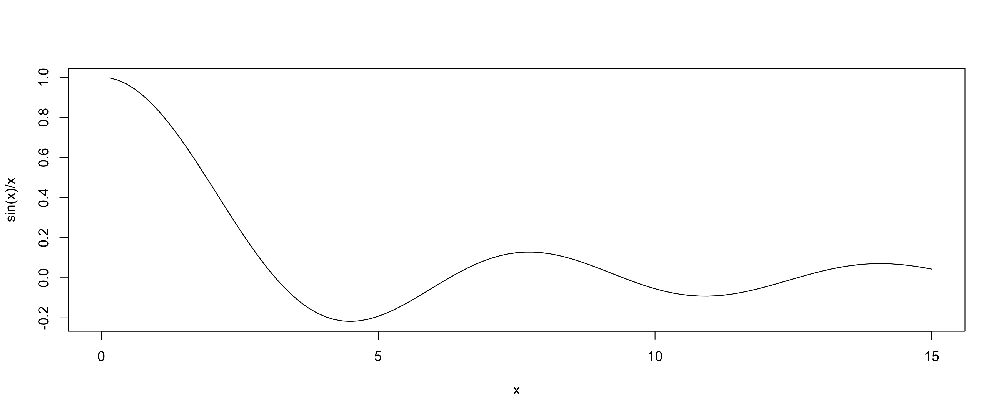

“Everything should be made as simple as possible, but not simpler”
Attributed to Albert Einstein
This unit will cover the following topics:
A-B-C: the R software as a scientific calculator
Routine operations: cleaning the workspace, special symbols
Mathematical functions, plotting a function, logical operations
Operations with vectors and matrices
In class the code is written live, following the R script of this unit. These notes contain the same material and are there for you to consult at any time.
The content of this unit is covered in Appendix A.0 (Basics of R) of Agresti and Kateri (2022). For a more extended treatment, see Chapter 1 and Appendix A of Albert and Rizzo (2012), or R Core Team (2024).
R as a scientific calculator
Scientific calculator
First of all, R can be used as if it were a scientific calculator:
# ======================================================================# R AS A SCIENTIFIC CALCULATOR# ======================================================================# ---- Scientific calculator ---------------------------------------------2+2
[1] 4
4* (3+5) # The sum within brackets is executed first
[1] 32
pi /4# Pi over four
[1] 0.7853982
To compute the power a^b one uses:
2^5# Alternative syntax: 2**5
[1] 32
The quantities \sqrt{2} and \sin(\pi/4) are instead obtained with the commands:
sqrt(2)
[1] 1.414214
sin(pi /4)
[1] 0.7071068
Note
Everything written after a hash (#) is treated as a comment.
Assigning a value
A value can be stored by assigning it to an object through the symbol <-.
# ---- Assigning a value -------------------------------------------------# Assign the value sqrt(5) to the object xx <-sqrt(5) # Alternative syntax (not recommended): x = sqrt(5)
The value contained in x can later be recalled, modified and saved into a new object, called for instance y.
y <- x + pi # That is, pi plus the square root of 5y
[1] 5.377661
To remove an object from memory one uses the command rm, that is, remove.
rm(x) # x is no longer present in the "workspace"
Note
R is case sensitive, therefore the object x is different from the object X.
Cleaning the workspace
It is good practice to keep the workspace, that is the working environment, clean.
If an object is no longer needed, it can be deleted through the command rm.
The list of the objects saved in memory can be displayed with the following command:
# ---- Cleaning the workspace --------------------------------------------ls() # The object y is present in the workspace
[1] "y"
Therefore, to delete all the saved objects, one can use
rm(list =ls())
Some mathematical functions I
Let us suppose that x is a real number.
What follows is a list of functions available in R:
# ---- Some mathematical functions I -------------------------------------x <-1/2# Example of a real number
exp(x) # Exponential and natural logarithm
[1] 1.648721
log(x)
[1] -0.6931472
abs(x) # Absolute value
[1] 0.5
sign(x) # Sign function
[1] 1
Some mathematical functions II
# ---- Some mathematical functions II ------------------------------------sin(x) # Trigonometric functions (sine, cosine, tangent)
[1] 0.4794255
cos(x)
[1] 0.8775826
tan(x)
[1] 0.5463025
asin(x) # Inverse trigonometric functions
[1] 0.5235988
acos(x)
[1] 1.047198
atan(x)
[1] 0.4636476
Note
R functions can be combined with one another, for example log(abs(x)).
Further mathematical functions I
Let us suppose that x and y are two real numbers. Moreover, let n and k be two natural numbers.
Note the use of ;, which can be used to separate two commands on the same line.
# ---- Further mathematical functions I ----------------------------------x <-1/2; y <-1/3# Real numbersn <-5; k <-2# Natural numbers
factorial(n) # n!
[1] 120
choose(n, k) # Binomial coefficient
[1] 10
round(x, digits =2) # Rounds x using 2 decimal digits
[1] 0.5
floor(x) # Rounds x down to the nearest integer
[1] 0
ceiling(x) # Rounds x up to the nearest integer
[1] 1
Further mathematical functions II
The gamma function \Gamma(x) = \int_0^\infty s^{x-1} e^{-s} d s is computed in R as follows:
# ---- Further mathematical functions II ---------------------------------gamma(x) # Gamma function
[1] 1.772454
The beta function \mathcal{B}(x,y) = \int_0^1 s^{x-1}(1-s)^{y-1}ds is computed in R as follows:
beta(x, y) # Beta function
[1] 4.206546
Plotting a function
In R it is possible to draw any function through the command curve.
If for example we consider the function f(x) = \frac{\sin(x)}{x}, then we can draw f(x) over the interval (0,15) as follows:
# ---- Plotting a function -----------------------------------------------curve(sin(x) / x, from =0, to =15)

The official documentation
The documentation of R is the main source of information.
What is a function for? What is the definition of its arguments? The answer should always be looked for in the official documentation and not in these slides.
The command ? function opens a window in which a function is described in detail. Example:
# ---- The official documentation ----------------------------------------? log # Documentation of the log function
A note about the exam
During the exam it is legitimate — indeed, it is strongly recommended — to consult the documentation.
Special symbols
Very large numbers, such as 10^{15}, and very small ones, such as 10^{-15}, are represented in R as follows:
# ---- Special symbols ---------------------------------------------------10^15
[1] 1e+15
10^(-15)
[1] 1e-15
Because of numerical approximation, when a number is too large R returns Inf, that is infinity. For example:
10^1000# A very large number, although finite
[1] Inf
The symbol NaN means instead Not a Number and is obtained when some mathematical function has not been used in the correct way. For example:
log(-1) # This command also generates a warning
Warning in log(-1): NaNs produced
[1] NaN
Numerical approximation errors
It is well known that \sin(\pi) = 0. However, in R one obtains a number very close to 0, but strictly positive. Indeed:
x <-c(10, 10^2, 10^3, 10^4, 10^5, 10^6) # Example 2log(x, base =10)
[1] 1 2 3 4 5 6
1:8>4# Example 3
[1] FALSE FALSE FALSE FALSE TRUE TRUE TRUE TRUE
Other functions are instead useful precisely when the argument is a vector:
x <-c(2, 3, 1, 3, 10, 5)length(x) # Length of the vector
[1] 6
sum(x) # Sum of the elements of the vector
[1] 24
cumsum(x) # Cumulative sums
[1] 2 5 6 9 19 24
Operations on vectors II
Further simple operations in which the argument is a vector are listed below:
# ---- Operations on vectors II ------------------------------------------x <-c(2, 3, 1, 3, 10, 5)prod(x) # Product of the elements of the vector
[1] 900
cumprod(x) # Cumulative products
[1] 2 6 6 18 180 900
sort(x, decreasing =FALSE) # Vector sorted in increasing order
[1] 1 2 3 3 5 10
min(x) # Minimum value
[1] 1
which.min(x) # Position of the value corresponding to the minimum
[1] 3
Finally, the behaviour of the following functions should be guessable from what we have seen so far:
max(x) # Maximum value
[1] 10
which.max(x) # Position of the value corresponding to the maximum
[1] 5
range(x) # Equivalent to: c(min(x), max(x))
[1] 1 10
Operations on vectors III
It is possible to select the elements of a vector using square brackets, as in the following examples:
# ---- Operations on vectors III -----------------------------------------# Concatenation of vectorsx <-c(rep(pi, 2), sqrt(2), c(10, 7))x[3] # Extracts the third element from the vector x, that is sqrt(2)
[1] 1.414214
x[c(1, 3, 5)] # Extracts the first, the third and the fifth element
[1] 3.141593 1.414214 7.000000
x[-c(1, 3, 5)] # Deletes the first, the third and the fifth element
[1] 3.141593 10.000000
x[x >3.5] # Extracts the elements greater than 3.5
[1] 10 7
The last command suggests that the elements of a vector can be selected through a condition on the vector itself.
Operations on vectors: a warning
What happens when two vectors of different length are summed?
Most programming languages return an error. R instead performs the operation anyway, by “recycling” the shorter vector.
In this first example, R at least returns a warning.
# ---- Operations on vectors: a warning ----------------------------------x <-1:5y <-1:6x + y # Equivalent to: c(x, x[1]) + y
Warning in x + y: longer object length is not a multiple of shorter object
length
[1] 2 4 6 8 10 7
In this second example, instead, R does not return any warning, which makes the situation particularly dangerous
x <-1:3y <-1:6x + y # Equivalent to: c(x, x) + y
[1] 2 4 6 5 7 9
Matrices and lists
Matrices
A matrix{\bf A} is a collection of elements (a)_{ij} for i=1,\dots,n and j=1,\dots,m.
For example, the square matrix of dimension 2 \times 2
{\bf A} = \begin{pmatrix}
5 & 2\\
1 & 4 \\
\end{pmatrix}, can be defined in R through the command matrix as follows:
In most cases, the row vectorx_row is interchangeable with the vector x.
# ---- Row vectors and R vectors -----------------------------------------x_row <-matrix(c(1, 10, 3, 5), nrow =1)x <-c(1, 10, 3, 5) # Similar, but not identical, to x_row
For example, the functions sum(x_row) and sum(x) return the same result.
There are however some slight distinctions. For example:
dim(x_row)
[1] 1 4
dim(x)
NULL
The symbol NULL means not defined, because the notion of dimension does not exist for a generic R vector.
Operations on matrices I
It is possible to select the elements of a matrix in a way analogous to what was done with vectors.
# ---- Operations on matrices I ------------------------------------------A[1, 2] # Extraction of the element in position (1,2)
[1] 2
A[, 2] # Extraction of the second column
[1] 2 4
A[1, ] # Extraction of the first row
[1] 5 2
Some basic commands to manipulate matrices are the following
dim(A) # Returns the dimension of the matrix
[1] 2 2
a <-c(A) # Converts the matrix into a vectora
[1] 5 1 2 4
diag(A) # Returns the diagonal of the matrix
[1] 5 4
t(A) # Computes the transposed matrix A'
[,1] [,2]
[1,] 5 1
[2,] 2 4
sum(A) # Sum of all the elements of A
[1] 12
Operations on matrices II
As for vectors, elementary operations (sum, product, log, exp, etc.) are performed element by element.
# ---- Operations on matrices II -----------------------------------------exp(A)
B <- A # I create a matrix B identical to A, for simplicityC <-rbind(A, B)C
[,1] [,2]
[1,] 5 2
[2,] 1 4
[3,] 5 2
[4,] 1 4
Analogously, let {\bf A} and {\bf B} be two matrices having the same number of rows and let us define {\bf C} = \begin{pmatrix}{\bf A} & {\bf B} \end{pmatrix}.
C <-cbind(A, B)C
[,1] [,2] [,3] [,4]
[1,] 5 2 5 2
[2,] 1 4 1 4
Operations on matrices III
Let {\bf x} and {\bf y} be two column vectors in \mathbb{R}^p. Then, their cross product is equal to
{\bf x}^\intercal {\bf y} = \sum_{i=1}^p x_i y_i.
In R we can use the command crossprod
# ---- Operations on matrices III ----------------------------------------x <-matrix(c(-4, 2, 6, 10, 22), ncol =1)y <-matrix(c(3, 2, 2, 7, 9), ncol =1)crossprod(x, y) # Equivalent to: sum(x * y)
[,1]
[1,] 272
The command crossprod also works correctly with R “vectors”.
The command crossprod can be used as well to compute the following matrix product
{\bf A}^\intercal {\bf B},
where {\bf A} and {\bf B} are two matrices of compatible dimensions.
Operations on matrices IV
In linear algebra the product between compatible matrices{\bf A} {\bf B} is called the row-by-column product. In R one uses the following command
# ---- Operations on matrices IV -----------------------------------------A <-rbind(c(1, 2, 3), c(4, 9, 2), c(2, 2, 2))B <-rbind(c(5, 2, 5), c(3, 3, 7), c(-2, -8, 10))A %*% B # Row-by-column product AB
In case a matrix is not invertible, the determinant is equal to 0. The command solve in that case produces an error.
# ---- Operations on matrices VI -----------------------------------------# Example of a NON invertible matrixA <-rbind(c(1, 2, 3), c(2, 4, 6), c(2, 2, 2))det(A) # Determinant equal to 0, solve(A) produces an error
[1] 0
There are several functions for the decomposition of matrices, whose output is sometimes a list.
A <-matrix(c(4, 1, 1, 8), ncol =2)chol(A) # Cholesky decomposition